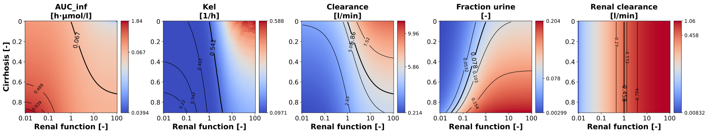

Overview
Models
| model | source |
|---|---|
| model | pravastatin_body_pravastatin_flat.xml |
Datasets
The experiment has no datasets.
Figures (1)


Code
scan_2d_genotypes_pk_parameter.py
"""Two dimensional scan of the cirrhosis and the renal function."""
from typing import ClassVar, TypedDict, override
import matplotlib.pyplot as plt
import numpy as np
from matplotlib.cm import ScalarMappable
from matplotlib.colors import CenteredNorm, Normalize, PowerNorm
from matplotlib.figure import Figure as FigureMPL
from sbmlsim import Q
from sbmlsim.result import ScanResult
from sbmlsim.simulation import Dimension, Scan, Simulation
from sbmlsim.units import Quantity
from pkdb_models.models.pravastatin.experiments.base_experiment import (
PravastatinSimulationExperiment,
)
from pkdb_models.models.pravastatin.pravastatin_pk import pk_parameters
class PKParameterSpec(TypedDict):
"""A pharmacokinetic parameter of the figure: its unit and label."""
unit: str
label: str
class AxisSpec(TypedDict):
"""A dimension of the scan: the scanned parameter, its unit and label."""
parameter: str
units: str
label: str
class Scan_2d_genotypes_pk_parameters(PravastatinSimulationExperiment):
"""Scan of hepatic and renal function and pk parameters.
In a run over the draws of the fitted parameters (`run_simulation
pkdb_models.models.pravastatin --uncertainty`) every point of the scan is
simulated for every draw on a coarser grid (`num_points_uncertainty`) and
the figure shows the median of the draws.
"""
#: the points of each dimension of the scan
num_points: ClassVar[int] = 100
#: the points of each dimension in a run over the draws: every point is
#: simulated and analysed for every draw
num_points_uncertainty: ClassVar[int] = 15
scan_map: ClassVar[dict[str, AxisSpec]] = {
"hepatic": {
"parameter": "f_cirrhosis",
"units": "dimensionless",
"label": "Cirrhosis [-]",
},
"renal": {
"parameter": "KI__f_renal_function",
"units": "dimensionless",
"label": "Renal function [-]",
},
}
#: the variables of the analysis
selections = (
"time",
"IVDOSE_pra",
"PODOSE_pra",
"[Cve_pra]",
"Aurine_pra",
"KI__f_renal_function",
"f_cirrhosis",
)
#: the oral dose [mg]
dose: ClassVar[int] = 10
# the pharmacokinetic parameters of the figure, see `pravastatin_pk`
pk_parameters_2d: ClassVar[dict[str, PKParameterSpec]] = {
"auc_inf_obs": {"unit": "µmole/l*hr", "label": "AUC_inf"},
"lambda_z": {"unit": "1/hr", "label": "Kel"},
"cl_f": {"unit": "l/min", "label": "Clearance"},
"fe_urine": {"unit": "dimensionless", "label": "Fraction urine"},
"cl_renal": {"unit": "l/min", "label": "Renal clearance"},
}
def ranges(self) -> dict[str, np.ndarray]:
"""Get the scanned values of the dimensions, fewer in a run over the draws."""
n = self.num_points if self.uncertainty is None else self.num_points_uncertainty
return {
"hepatic": np.linspace(0, 0.9, num=n),
"renal": np.logspace(-2, 2, num=n),
}
@override
def simulations(self) -> dict[str, Scan]:
ranges = self.ranges()
return {
f"scan_pra_{self.dose}": Scan(
simulation=Simulation(
start=0,
end=24 * 60,
preinit_changes={
**self.default_changes(),
"PODOSE_pra": Q(self.dose, "mg"),
},
),
dimensions=[
Dimension(
"dim_cirrhosis",
values={
self.scan_map["hepatic"]["parameter"]: Q(
ranges["hepatic"],
self.scan_map["hepatic"]["units"],
)
},
),
Dimension(
"dim_renal_impairment",
values={
self.scan_map["renal"]["parameter"]: Q(
ranges["renal"],
self.scan_map["renal"]["units"],
)
},
),
],
)
}
@override
def figures_mpl(self) -> dict[str, FigureMPL]:
return {**self.figures_mpl_pharmacokinetics()}
def calc_pk_parameters(self, xres: ScanResult) -> dict[str, Quantity]:
"""Calculate the pharmacokinetic parameters of every simulation of the scan.
Returns:
The parameters of `pravastatin_pk` by name, as arrays over the scan
(cirrhosis x renal function), the median of the draws in a run over
the draws of the fitted parameters.
"""
dims = ["dim_cirrhosis", "dim_renal_impairment"]
run = self.uncertainty
order = [*dims, *([run.id] if run is not None else [])]
# the analysis of all simulations at once, a row per simulation in the
# order of the dimensions of the result
df = pk_parameters(experiment=self, xres=xres)
shape = tuple(xres.ds.sizes[dim] for dim in xres.dims)
axes = [xres.dims.index(dim) for dim in order]
values: dict[str, np.ndarray] = {}
units: dict[str, str] = {}
for key in self.pk_parameters_2d:
array = df[key].to_numpy(dtype=float).reshape(shape).transpose(axes)
values[key] = np.median(array, axis=-1) if run is not None else array
units[key] = str(df[f"{key}_unit"].iloc[0])
return {key: Q(values[key], units[key]) for key in values}
@staticmethod
def pk_norm(pk_key: str, vmin: float, vmax: float, vcenter: float) -> Normalize:
"""Get the normalization of the colors of a pharmacokinetic parameter.
The ranges of the parameters over the scan (the reference: no cirrhosis,
normal renal function) determine the normalization:
`auc_inf_obs` 0.034 - 38.333 µmole/l*hr (reference 0.063),
`lambda_z` 0.05 - 0.8 1/hr (reference 0.785),
`cl_f` 0.01 - 11.4 l/min (reference 6.2),
`fe_urine` the fraction of the dose in the urine, linear,
`cl_renal` 0.0003436 - 0.835 l/min (reference 0.026).
Args:
pk_key: the pharmacokinetic parameter.
vmin: minimum of the parameter over the scan.
vmax: maximum of the parameter over the scan.
vcenter: the parameter of the reference simulation.
Raises:
ValueError: for a parameter without a normalization.
"""
if pk_key == "cl_f":
return CenteredNorm(vcenter=vcenter)
if pk_key == "fe_urine":
return Normalize(vmin=vmin, vmax=vmax)
if pk_key == "cl_renal":
return PowerNorm(gamma=1 / 5, vmin=vmin, vmax=vmax)
if pk_key == "lambda_z":
return PowerNorm(gamma=27, vmin=vmin, vmax=vmax)
if pk_key == "auc_inf_obs":
return PowerNorm(gamma=1 / 10, vmin=vmin, vmax=vmax)
raise ValueError(f"No normalization of the colors of '{pk_key}'.")
@staticmethod
def tick_positions(
values: np.ndarray, targets: list[float], log: bool
) -> list[float]:
"""Get the positions of target values on the axis of the image of the scan.
The image of the scan has a pixel per scanned value (evenly spaced on
the scale of the scan), so the position of a target is its fractional
index among the scanned values.
Args:
values: the scanned values, increasing.
targets: the values to put a tick at, e.g. the decades.
log: the values are evenly spaced on a logarithmic scale.
"""
x = np.log10(values) if log else values
t = np.log10(targets) if log else np.asarray(targets, dtype=float)
return [float(v) for v in np.interp(t, x, np.arange(len(values)))]
@staticmethod
def colorbar_ticks(
norm: Normalize, vmin: float, vmax: float, vref: float
) -> list[float]:
"""Get the ticks of a colorbar: minimum, maximum and the reference.
The reference is left out if it is too close to the minimum or the
maximum on the colorbar, where the labels would overlap; its contour
line is labeled in the image.
Args:
norm: the normalization of the colors.
vmin: minimum of the parameter over the scan.
vmax: maximum of the parameter over the scan.
vref: the parameter of the reference simulation.
"""
ticks = [vmin, vmax]
positions = [float(norm(v)) for v in ticks]
if all(abs(float(norm(vref)) - position) > 0.08 for position in positions):
ticks.insert(1, vref)
return ticks
def figures_mpl_pharmacokinetics(self) -> dict[str, FigureMPL]:
"""Visualize dependency of pharmacokinetics parameters."""
cmap = "coolwarm"
parameters_dict = self.pk_parameters_2d
ranges = self.ranges()
cirrhosis_values = ranges["hepatic"]
renalimp_values = ranges["renal"]
f, axes = plt.subplots(nrows=1, ncols=5, figsize=(5 * 5, 6 * 1))
f.subplots_adjust(wspace=0.5, left=0.04, bottom=0.001)
axes = axes.flatten()
# idx for scan vectors with reference simulation
# f_cirrhosis = 0 and f_renal_function = 1
cirrhosis_ref_idx = 0
renalimp_ref_idx = min(
range(len(renalimp_values)), key=lambda i: abs(renalimp_values[i] - 1)
)
# get results, the parameters of all simulations at once
sim_key = f"scan_pra_{self.dose}"
pk_arrays = self.calc_pk_parameters(self.results[f"task_{sim_key}"])
for k, (pk_key, pk_value) in enumerate(parameters_dict.items()):
ax = axes[k]
arr = pk_arrays[pk_key].to(pk_value["unit"])
# ref value
pk_ref = arr.magnitude[cirrhosis_ref_idx, renalimp_ref_idx]
# plot data
min_arr, max_arr = np.min(arr.magnitude), np.max(arr.magnitude)
norm = self.pk_norm(pk_key, vmin=min_arr, vmax=max_arr, vcenter=pk_ref)
# plot array with cmap and specific norm
ax.imshow(arr.magnitude, origin="lower", cmap=cmap, norm=norm)
def fmt(x: float) -> str:
return f"{x:.3g}"
C_ref = ax.contour(
arr.magnitude, [pk_ref], origin="lower", colors="black", linewidths=2
)
ax.clabel(C_ref, C_ref.levels, inline=True, fmt=fmt, fontsize=14)
C_lines = ax.contour(
arr.magnitude,
np.linspace(min_arr, max_arr, 5),
origin="lower",
linestyles="solid",
colors="black",
linewidths=1,
)
ax.clabel(C_lines, C_lines.levels, inline=True, fmt=fmt, fontsize=10)
# tick adjustments
ax.xaxis.set_ticks_position("bottom")
# ticks at the decades of the renal function and at multiples of 0.2
# of the cirrhosis
xticks = [0.01, 0.1, 1, 10, 100]
yticks = [0, 0.2, 0.4, 0.6, 0.8]
ax.xaxis.set_ticks(
self.tick_positions(renalimp_values, xticks, log=True),
[f"{v:g}" for v in xticks],
)
ax.yaxis.set_ticks(
self.tick_positions(cirrhosis_values, yticks, log=False),
[f"{v:g}" for v in yticks],
)
ax.tick_params(axis="x", labelsize=self.tick_font_size)
ax.tick_params(axis="y", labelsize=self.tick_font_size)
ax.set_aspect(aspect=1, adjustable="datalim")
ax.set_aspect(aspect=1, adjustable="box")
# make colorbar
cax = f.add_axes(
(
ax.get_position().x1 + 0.005,
ax.get_position().y0,
0.01,
ax.get_position().height,
)
)
cb = f.colorbar(mappable=ScalarMappable(norm=norm, cmap=cmap), cax=cax)
# the gradient as vector cells: matplotlib rasterizes it into an
# embedded image, which some SVG viewers do not show; the edges of
# the cells in their color close the seams between them
if cb.solids is not None:
cb.solids.set_rasterized(False)
cb.solids.set_edgecolor("face")
cb_ticks = self.colorbar_ticks(
norm, vmin=min_arr, vmax=max_arr, vref=pk_ref
)
cb.set_ticks(cb_ticks, labels=[fmt(tick) for tick in cb_ticks])
cb.ax.tick_params(labelsize=12)
# ax title and labels
ax.set_title(
f"{pk_value['label']}\n[{f'{arr.units:~P}' or '-'}]",
fontdict=self.font,
)
ax.invert_yaxis()
ax.set_xlabel(
f"{self.scan_map['renal']['label']}",
fontdict=self.font,
)
axes[0].set_ylabel(
f"{self.scan_map['hepatic']['label']}",
fontdict=self.font,
)
return {"fig": f}